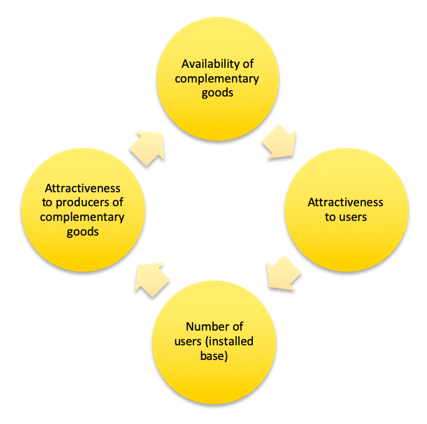
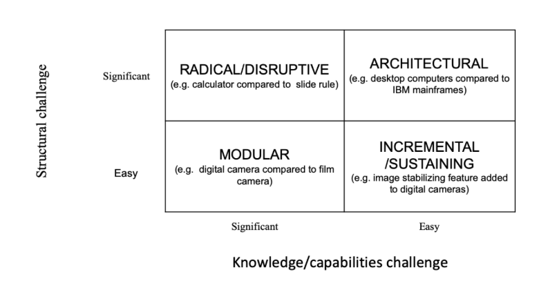

Technology
Credit to: TIANAI MY LOVE <3 and Rahma typed what she said
Introduction
PEST
Elements
- Internet
- Information Technologies
Significance:
- Demands constants scanning and learning
- Legacies/Compatibility make change challenging
What is Technology?
Equipment & Material Advancements
- Substitutes or magnify human efforts
- Reduce costs, improve performance, increase flexibility (resource allocation)
Information Technology Advancements
- Devices & software for creating, storing, using and exchanging information
Key Concepts
- Complementary goods: good that is used in conjunction with your product
- Technology standards: enables compatibility of complementary goods
- Installed base: # of users
- Network effort: increased number of people increase the value of good/service
- Lock-in: the extent to which a customer is commited to a product or service
Vicious/Virtuous Cycle

Problem 1: Low availibility of complementary goods
Solutions: increase compatibility, establish alliances, incentivise complementary goods suppliers, build customer base
Problem 2: Consumer resistance to switch
Solution: lower switching costs, offer leap in performance
Business Tools
Current
- Big Data & Analytics
- Implications: deeper insights into customer needs, predictive capabilities anticipate customer needs, foundation of AI
- Examples:
- customization/localization -> grocery stores identifying local tastes
- improve customer targeting -> co-location of complementary goods
- optimized operations -> deteremining quanities of production
- automation -> AI
- E-Commerce & Omnichannel
- Omnichannel: seamless experience between online platforms and brick and morter stores
- Implications: current information, convenient purchases, personalized communication and purchase experience
- Examples:
- reminder of abandoned cart items -> Amazon
Emerging
- Virtual & Augmented Reality
- Implications: experience without purchase or physical presence
- Examples:
- "trying" on items -> Nordstrom dressing rooms, IKEA furniture
- experiences -> Volkswagon HR training
- animated objects and videos -> lego toys, virtual meetings
Future
- Blockchain
- Blockchain: distributed ledger (blocks) that ensures accuracy and security of data
- Challenge: requires many participants on on platform
- Autonomous Machines
- Challenge 1: requires precise programming and anticipation of all possiblilites
- Challenge 2: ethical issure
Opportunities and Threats
Opportunities
- products: innovation, uniqueness, value (high quallity products)
- improve information use, access and sharing
- create competitive advantage and barriers to entry
- customization
Threats
- imitation: information is costly to develop, but cheap to share
- new tech and new entrants in unfamiliar areas: require new capabilities, resources and learning
- information overload and security
- disconnected employees and customers
Critical Success Factors
| Factor |
Opportunity |
Threat |
| Achieving financial performance |
Reduce costs through constant improvements |
Higher cost of acquiring customers due to lack of physical relationships |
| Meeting customer needs |
Meet current and future needs (big data) |
Hard to become personal |
| Building quality products and services |
Determine features that consumers want |
Products more tech complex, larger faliures |
| Ecouraging innovation and creativity |
New products/services |
Legacies contraints |
| Employee commitment |
Use for VR training |
More info sharing leads to more job searching |
Innovation Types

Sustaining Innovations
- incremental improvements in existing products
- Target: mainstream high margin customers
- incumbents usually win
- Examples: Apple as an incumbent producing new IPhones will be more successful than new entrant with slightly better phone
Disruptive Innovations
- radical changes that require extensive knowledge
- starts in lower performance, then improves rapidly, enters mainstream market
- new, disrupting firms often win
- Examples: Uber vs. taxi services, Netflix vs. Blockbuster, AirBnB vs. hotels
- Key considerations: initial target market and performance vs. future market and performance
Tactics
Large Companies
Why large firms sometimes fail
- Organization, resources: slow response time/decision making
- Organization: hassle of organizational processes filters innnovation
- Management preferences, strategy: focus on mainstream customers lead to neglecting new technologies and higher margin opportunities
- Example: banks avoiding financing disruptive tech
- Strategy, management preferences: avoid small, uncertain, unfamiliar markets (niche, uncertain growth, low profit margins, risk of faliure criticism)
Tactics for large firms
- monitor outside industry
- partner with young firms
- extablish venture units
- understand why customers buy a good or service
Milkshake Example Video
Small Companies
Tactics for small companies
Porter's 5 Forces
Technologies impact on profitability using Porter's five forces
NOTE: this section was from our brains use with caution
- Threat of new entrants: disruptive tech -> reduce profitability (spend more on market research, making plans to fend off new entrants, more on R&D)
- Bargaining power of buyers: consumer tastes in tech -> reduce profitability (preferences constantly changing need to spend money to keep up) OR increase profitability (cater to taste with differentiation)
- Example: preferences of different phones
- Supplier power: compatible products with tech -> increase profitibility because reducing supplier power (lower switching costs with higher compatibility)
- Threat of substitutes: tech advancements provide a competitive advantage -> increase profitibility
- Example: digital communication vs. mail
- Competition/Rivalry: incremental changes differentiate -> increase profitibility
- Example: unique features in mobile devices